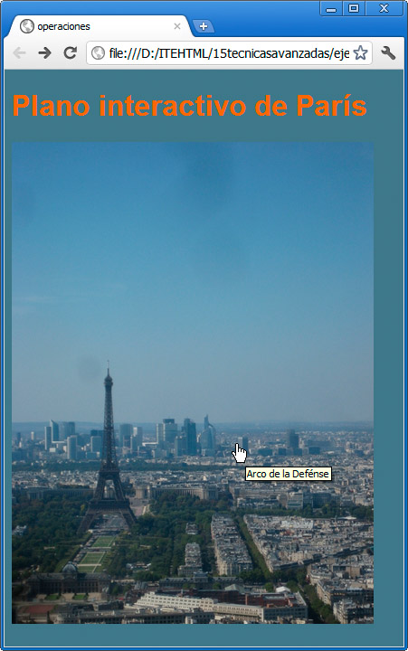

Con HTML podemos utilizar una única imagen y definir zonas en su interior de tal modo que, cuando el usuario pase el ratón sobre esas zonas, podamos enlazar con varios sitios. Se emplea mucho para crear mapas o grandes imágenes desde las que saltar a diferentes lugares.
Su realización se basa en usar una imagen normal y corriente, pero añadiéndole el parámetro usemap seguido del nombre de un mapa. Por ejemplo:
<img src="panoramicaparis" usemap="#paris" />
Esa imagen se acompañará de una serie de coordenadas, que se engloban con la etiqueta <map>. Observemos este mapa típico:
<map name="paris">
<area shape="rect" coords="60,250,140,400" alt="Torre Eiffel" href="http://es.wikipedia.org/wiki/Torre_Eiffel" />
<area shape="rect" coords="240,290,260,350" alt="Arco de la Defénse" href="http://es.wikipedia.org/wiki/Arco_de_la_Defensa" />
<area shape="circle" coords="100,450,40" alt="Campo de Marte" href="http://es.wikipedia.org/wiki/Campo_de_Marte_%28Par%C3%ADs%29" />
</map>
La etiqueta <area> se acompaña de varios parámetros:
- shape para indicar el tipo de área que se va a definir. Usaremos rect para rectángulos (seguido de cuatro coordenadas x1,y1,x2 e y2), circle para círculos (más x1,y1 y el radio) o poly (seguido de una serie de coordenadas x1,y1,...xn,yn).
- coords para indicar las coordenadas, según el tipo de figura.
- alt para añadir un texto alternativo que no se mostrará; sólo se introduce por motivos de accesibilidad.
- href para establecer una dirección web a la que accederemos al hacer clic sobre el área.

Pregunta de Elección Múltiple
|
shape, rect, circle o poly. | |
|
coords, alt y href. | |
|
Ninguna de las anteriores es correcta.
| |
|
A y b son correctas.
|
Nota
Para el cálculo de las coordenadas podemos emplear cualquier programa de dibujo, trazando las diferentes áreas y viendo qué valores x e y nos arrojan.
Actividad 3
Realizaremos un pequeño mapa basado en la imagen de un reloj y convertiremos algunas horas en enlaces a páginas de un calendario. Para redondear la actividad, podríamos hacer que todos los enlaces fuesen a diferentes secciones de un mismo documento, empleando los enlaces internos.